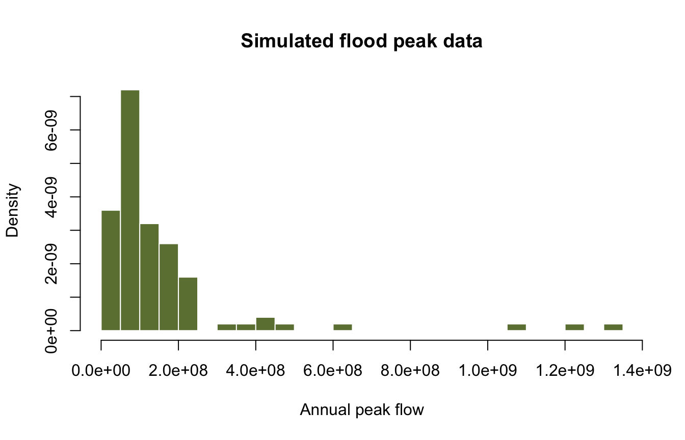
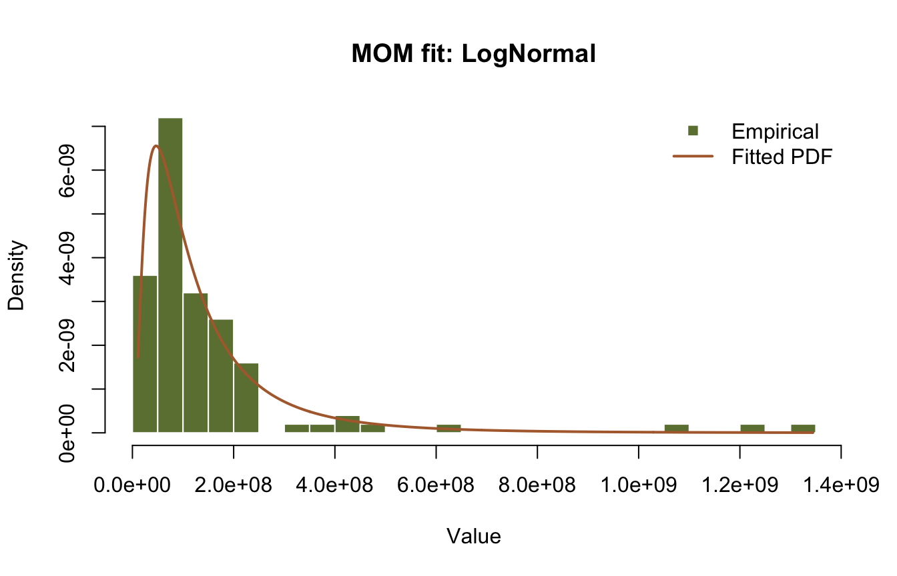
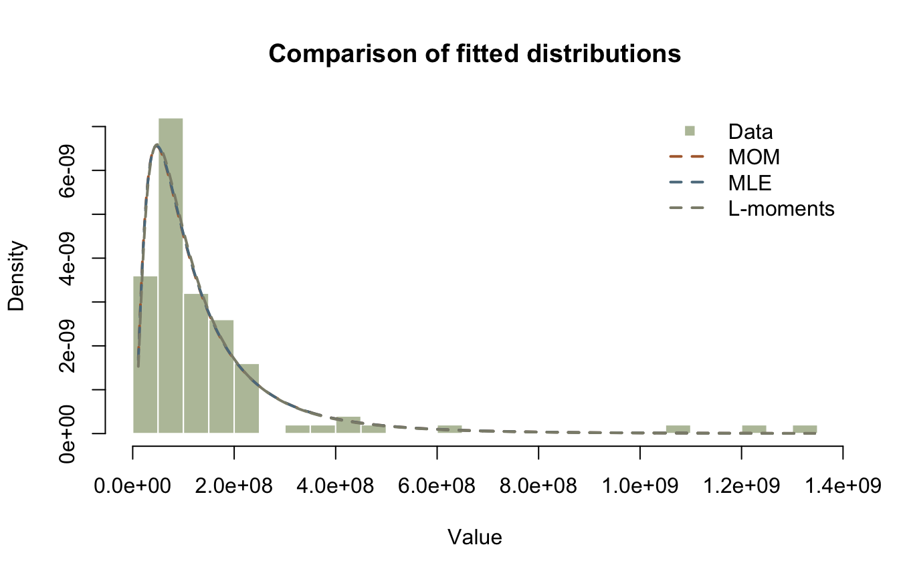
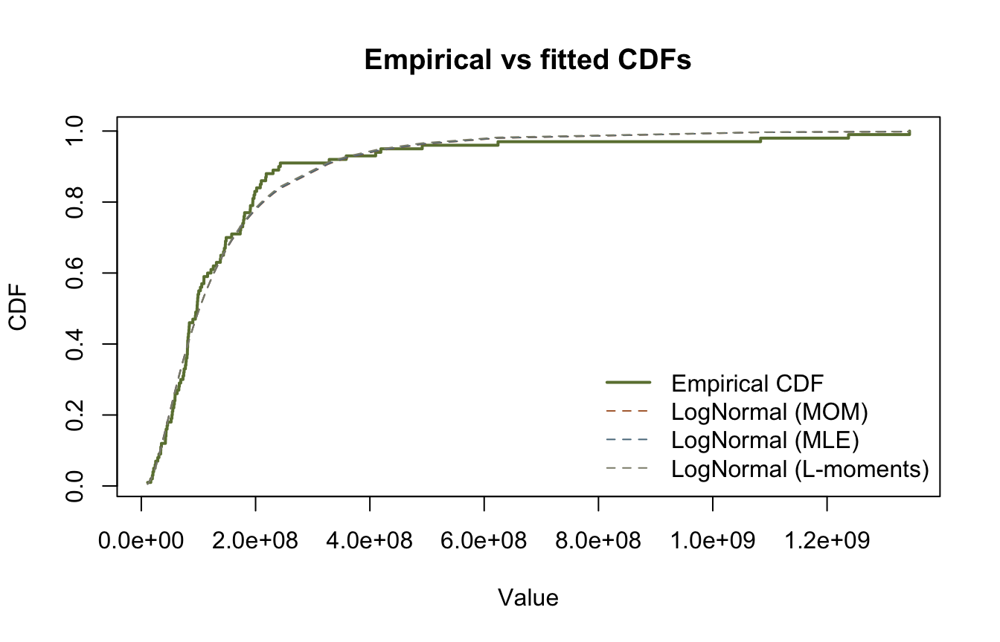
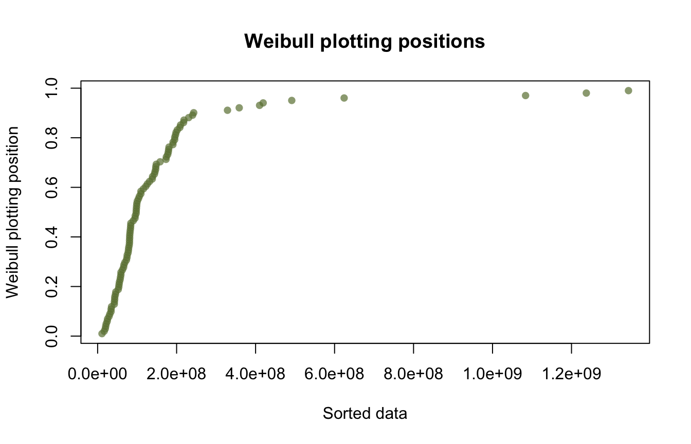

library(corehydror)02. Distribution fitting
Ported from 02_distribution_fitting.ipynb in the USACE-RMC Numerics-Python-Examples repository (0BSD licensed). The upstream notebook drives the C# Numerics.dll through pythonnet; this version uses corehydror, whose compiled core is a validated C++ port of the same library, so the numbers below reproduce the upstream outputs exactly. The Python version of this example uses the same core and prints the same numbers.
What you’ll learn
- Fitting a distribution by Method of Moments (MOM), Maximum Likelihood (MLE), and L-moments.
- Comparing fitted distributions with log-likelihood, AIC, BIC, and RMSE.
- Visual checks: empirical vs fitted CDFs and Weibull plotting positions.
- Ranking many candidate families at once with
fit_distributions.
Set up
The upstream setup cell loads the CoreCLR runtime, resolves Numerics.dll, and imports the .NET types. Here the setup is one library call.
Helper function
The function below plots a histogram of the data with the PDF of a fitted distribution, the same helper the upstream notebook defines.
plot_empirical_vs_model <- function(data, dist, title = "Empirical vs fitted distribution") {
x <- seq(min(data), max(data), length.out = 500)
hist(data, breaks = 20, freq = FALSE, col = "#6b7f3f", border = "white",
main = title, xlab = "Value", ylab = "Density")
lines(x, dist_pdf(dist, x), col = "#b06a3b", lwd = 2)
legend("topright", c("Empirical", "Fitted PDF"), bty = "n",
pch = c(15, NA), lty = c(NA, 1), lwd = c(NA, 2),
col = c("#6b7f3f", "#b06a3b"))
}Example data: flood peaks
We simulate 100 annual peak flows from a LogNormal distribution. As in the C# library, LogNormal is the base-10 family: its parameters are the mean and standard deviation of \(\log_{10}(x)\), so LogNormal(8, 0.5) produces values around \(10^8\). (The base-e family is LnNormal.) The draw is seeded, and the port keeps the C# Mersenne Twister bit-exact, so these are the same 100 numbers the upstream notebook generates. The upstream prints the population standard deviation (NumPy’s np.std), so we compute that rather than R’s sample sd().
lognormal <- distribution("LogNormal", c(8, 0.5))
data <- dist_random(lognormal, 100, seed = 123)
std_pop <- sqrt(mean((data - mean(data))^2)) # np.std: population standard deviation
cat("Sample size:", length(data), "\n")Sample size: 100 cat(sprintf("Sample mean: %.2f\n", mean(data)))Sample mean: 158155878.08cat(sprintf("Sample std: %.2f\n", std_pop))Sample std: 213541263.95hist(data, breaks = 20, freq = FALSE, col = "#6b7f3f", border = "white",
main = "Simulated flood peak data", xlab = "Annual peak flow", ylab = "Density")
Method of Moments (MOM)
The Method of Moments is the oldest and simplest approach to parameter estimation. The idea: equate sample moments to the corresponding theoretical moments of the distribution and solve for the parameters. Given a sample \(x_1, \ldots, x_n\), the first two sample moments are the mean and standard deviation:
\[ \bar{x} = \frac{1}{n}\sum_{i=1}^{n} x_i, \qquad s = \sqrt{\frac{1}{n-1}\sum_{i=1}^{n}(x_i - \bar{x})^2} \]
A two-parameter family needs only these two; three-parameter families also use the sample skewness. The Normal\((\mu, \sigma)\) gives \(\hat{\mu} = \bar{x}\) and \(\hat{\sigma} = s\) directly, while the base-10 LogNormal solves its log-space \(\mu\) and \(\sigma\) from the real-space mean and standard deviation.
Strengths: simple, closed-form solutions, always produces estimates. Weaknesses: less statistically efficient than MLE, and sensitive to outliers because conventional moments give disproportionate weight to extreme values.
The upstream code mutates a distribution in place with Estimate(data, ParameterEstimationMethod.MethodOfMoments); here dist_fit returns the fitted object. The printed values match the upstream Mean and StandardDeviation properties, which are real-space moments (the parameters themselves live in \(\log_{10}\) space).
mom <- dist_fit("LogNormal", data, method = "mom")
mom_m <- dist_moments(mom)
cat(sprintf("MOM fit: mean=%.2f, sd=%.2f\n", mom_m[["mean"]], mom_m[["sd"]]))MOM fit: mean=150193934.68, sd=162945821.98cat(sprintf(" parameters (log10 space): mu=%.4f, sigma=%.4f\n",
dist_params(mom)[1], dist_params(mom)[2])) parameters (log10 space): mu=8.0077, sigma=0.3831plot_empirical_vs_model(data, mom, title = "MOM fit: LogNormal")
Maximum Likelihood Estimation (MLE)
MLE finds the parameter values that make the observed data most probable under the assumed model. Given independent observations \(x_1, \ldots, x_n\) with PDF \(f(x \mid \boldsymbol{\theta})\), the likelihood is
\[ L(\boldsymbol{\theta} \mid \mathbf{x}) = \prod_{i=1}^{n} f(x_i \mid \boldsymbol{\theta}) \]
and, because products are numerically unstable, optimization is performed on the log-likelihood:
\[ \ell(\boldsymbol{\theta}) = \sum_{i=1}^{n} \log f(x_i \mid \boldsymbol{\theta}), \qquad \hat{\boldsymbol{\theta}}_{\text{MLE}} = \underset{\boldsymbol{\theta}}{\text{argmax}} \; \ell(\boldsymbol{\theta}) \]
For some families (Normal, Exponential) the MLE has a closed form; for most families used in hydrology it is found numerically, with initial values derived from L-moment estimates. MLE is asymptotically efficient and unbiased, and its log-likelihood feeds directly into AIC and BIC below. It can be biased for small samples and requires the full probability model.
The upstream prints Mean (real space) and Sigma (the \(\log_{10}\)-space scale parameter); we print the same two quantities.
mle <- dist_fit("LogNormal", data, method = "mle")
mle_m <- dist_moments(mle)
cat(sprintf("MLE fit: mean=%.2f, sigma(log10)=%.2f\n",
mle_m[["mean"]], dist_params(mle)[2]))MLE fit: mean=149606124.89, sigma(log10)=0.38L-moments
L-moments are linear combinations of order statistics that provide robust alternatives to conventional moments [1]. They are especially valuable for small samples (\(n < 50\)), data with outliers, and extreme value analysis. They are defined through probability-weighted moments (PWMs),
\[ \beta_r = E\left[X \cdot F(X)^r\right], \quad r = 0, 1, 2, \ldots \]
with the first four L-moments
\[ \lambda_1 = \beta_0, \quad \lambda_2 = 2\beta_1 - \beta_0, \quad \lambda_3 = 6\beta_2 - 6\beta_1 + \beta_0, \quad \lambda_4 = 20\beta_3 - 30\beta_2 + 12\beta_1 - \beta_0 \]
and the dimensionless ratios \(\tau = \lambda_2 / \lambda_1\) (L-CV), \(\tau_3 = \lambda_3 / \lambda_2\) (L-skewness), and \(\tau_4 = \lambda_4 / \lambda_2\) (L-kurtosis). Unlike conventional skewness and kurtosis, the ratios are bounded, which makes them stable and interpretable. Because L-moments use only linear combinations of order statistics, a single extreme observation cannot dominate them, and they stay nearly unbiased even for samples as small as \(n = 10\). For hydrological records of 30 to 60 annual values, that robustness matters.
lm_fit <- dist_fit("LogNormal", data, method = "lmom")
lm_m <- dist_moments(lm_fit)
cat(sprintf("L-moments fit: mean=%.2f, sigma(log10)=%.2f\n",
lm_m[["mean"]], dist_params(lm_fit)[2]))L-moments fit: mean=147689495.62, sigma(log10)=0.37Comparing the three fits
The three estimation methods land on nearly the same parameters for this sample, so the fitted PDFs almost coincide.
x <- seq(min(data), max(data), length.out = 500)
hist(data, breaks = 20, freq = FALSE, col = adjustcolor("#6b7f3f", 0.5),
border = "white", main = "Comparison of fitted distributions",
xlab = "Value", ylab = "Density")
lines(x, dist_pdf(mom, x), lty = 2, lwd = 2, col = "#b06a3b")
lines(x, dist_pdf(mle, x), lty = 2, lwd = 2, col = "#5b7a8c")
lines(x, dist_pdf(lm_fit, x), lty = 2, lwd = 2, col = "#8c8c7a")
legend("topright", c("Data", "MOM", "MLE", "L-moments"), bty = "n",
pch = c(15, NA, NA, NA), lty = c(NA, 2, 2, 2), lwd = c(NA, 2, 2, 2),
col = c(adjustcolor("#6b7f3f", 0.5), "#b06a3b", "#5b7a8c", "#8c8c7a"))
Goodness-of-fit diagnostics
We compare the models with the log-likelihood and the information criteria AIC [2] and BIC [3]. A larger (less negative) log-likelihood and smaller AIC/BIC reflect a better fit. The upstream notebook calls the C# GoodnessOfFit static class; those metrics are two-line formulas over the log-likelihood, so this port computes them inline. With \(k\) parameters and \(n\) observations:
\[ \mathrm{AIC} = 2k - 2\log L, \qquad \mathrm{BIC} = k \ln(n) - 2\log L \]
RMSE (smaller is better) compares the sorted observations to the fitted quantiles at the Weibull plotting positions. One quirk of the C# implementation, reproduced here so the numbers match the upstream table: it drops the \(k\) largest observations from the sum and divides by \(n - k\).
k <- 2 # LogNormal has two parameters
n <- length(data)
sorted_data <- sort(data)
pp <- plotting_positions(n) # Weibull: i / (n + 1)
rmse <- function(dist) {
modeled <- dist_quantile(dist, pp)
m <- n - k # C# GoodnessOfFit.RMSE drops the k largest values and divides by n - k
sqrt(sum((modeled[1:m] - sorted_data[1:m])^2) / m)
}
fits <- list("LogNormal (MOM)" = mom, "LogNormal (MLE)" = mle,
"LogNormal (L-moments)" = lm_fit)
lls <- sapply(fits, \(d) dist_log_likelihood(d, data))
results <- data.frame(
Distribution = names(fits),
LogLikelihood = lls,
AIC = 2 * k - 2 * lls,
BIC = k * log(n) - 2 * lls,
RMSE = sapply(fits, rmse),
row.names = NULL
)
print(results) Distribution LogLikelihood AIC BIC RMSE
1 LogNormal (MOM) -1972.686 3949.371 3954.581 59959552
2 LogNormal (MLE) -1972.683 3949.366 3954.576 60413985
3 LogNormal (L-moments) -1972.713 3949.425 3954.635 61939259Empirical vs fitted CDFs
Comparing the fitted CDFs to the empirical CDF gives a visual check of fit. The empirical CDF assigns each sorted observation \(x_i\) the fraction of values less than or equal to it, \(i/n\): if \(\mathrm{ECDF}(x) = 0.80\), about 80% of the observations are \(\leq x\).
empirical_cdf <- seq_len(n) / n
plot(sorted_data, empirical_cdf, type = "s", col = "#6b7f3f", lwd = 2,
main = "Empirical vs fitted CDFs", xlab = "Value", ylab = "CDF")
lines(sorted_data, dist_cdf(mom, sorted_data), lty = 2, col = "#b06a3b")
lines(sorted_data, dist_cdf(mle, sorted_data), lty = 2, col = "#5b7a8c")
lines(sorted_data, dist_cdf(lm_fit, sorted_data), lty = 2, col = "#8c8c7a")
legend("bottomright", bty = "n",
c("Empirical CDF", "LogNormal (MOM)", "LogNormal (MLE)", "LogNormal (L-moments)"),
lty = c(1, 2, 2, 2), lwd = c(2, 1, 1, 1),
col = c("#6b7f3f", "#b06a3b", "#5b7a8c", "#8c8c7a"))
Plotting positions
Plotting positions assign each ordered observation an empirical nonexceedance probability, the basis for probability paper, hydrologic frequency plots, and return-period calculations. The Weibull plotting position maps the \(i\)-th smallest value in a sample of size \(n\) to
\[ p_i = \frac{i}{n + 1} \]
The upstream calls PlottingPositions.Weibull(n); here plotting_positions(n) computes the same values (Weibull is the default; other conventions are available through method = or alpha =).
weibull_pp <- plotting_positions(n)
plot(sorted_data, weibull_pp, pch = 16, col = adjustcolor("#6b7f3f", 0.7),
main = "Weibull plotting positions",
xlab = "Sorted data", ylab = "Weibull plotting position")
Ranking many families at once
Beyond comparing estimation methods for one family, fit_distributions fits 15 candidate families by MLE and reports AIC, BIC, and RMSE for each. On this sample the LogNormal fits rank near the top, as they should for LogNormal data; two flexible three-parameter families edge it out by a point of AIC, a normal outcome for a single 100-value sample. Rows with converged FALSE are candidates whose MLE failed on this sample: here KappaFour, whose four-parameter fit did not converge on these data. The run is deterministic, seed and all, so the table is the same on every call and in both languages. (This analysis-level RMSE follows the C# convention of using the DataFrame’s Hirsch-Stedinger plotting positions, so it is not comparable to the Weibull-based RMSE computed above.) Example 16 is about this verb on its own, including what the fifteenth candidate is and why a ranking on a short record should not be trusted.
ranking <- as.data.frame(fit_distributions(data))
print(ranking[order(ranking$aic), ], row.names = FALSE) distribution aic bic rmse converged
GeneralizedLogistic 3947.264 3955.080 78405808 TRUE
GeneralizedExtremeValue 3948.682 3956.498 79444156 TRUE
LogNormal 3949.366 3954.576 103372977 TRUE
LnNormal 3949.366 3954.576 103374946 TRUE
LogPearsonTypeIII 3949.984 3957.800 89596035 TRUE
GeneralizedNormal 3950.867 3958.683 97654183 TRUE
GeneralizedPareto 3958.599 3966.414 89168056 TRUE
PearsonTypeIII 3963.482 3971.298 111248462 TRUE
Exponential 3965.299 3970.509 114055753 TRUE
GammaDistribution 3976.384 3981.595 120134160 TRUE
Weibull 3979.671 3984.881 111920834 TRUE
Gumbel 4007.165 4012.376 142802128 TRUE
Logistic 4053.272 4058.482 154872935 TRUE
Normal 4123.656 4128.866 159153334 TRUE
KappaFour NaN NaN NaN FALSESummary
You have:
- fit a distribution by MOM, MLE, and L-moments with
dist_fit, - compared the fits with log-likelihood, AIC, BIC, and RMSE computed inline,
- checked the fits visually against the empirical CDF and Weibull plotting positions,
- ranked 15 candidate families at once with
fit_distributions.
Exercise
- Generate synthetic data from a Weibull distribution (
dist_random(distribution("Weibull", c(scale, shape)), n, seed = ...)). - Fit Weibull parameters using MLE and L-moments.
- Compare fit quality with AIC/BIC.
References
[1] J. R. M. Hosking, “L-moments: Analysis and estimation of distributions using linear combinations of order statistics,” Journal of the Royal Statistical Society: Series B, vol. 52, no. 1, pp. 105-124, 1990.
[2] H. Akaike, “A new look at the statistical model identification,” IEEE Transactions on Automatic Control, vol. 19, no. 6, pp. 716-723, 1974.
[3] G. Schwarz, “Estimating the dimension of a model,” Annals of Statistics, vol. 6, no. 2, pp. 461-464, 1978.
Reproduction check
Values printed by the upstream notebook (run against the real C# library), compared with this port. Everything here is deterministic seeded math, so the match is exact; the upstream prints at 2 to 6 decimals, so the assertions compare the formatted values, and the first seeded draw plus the MLE sigma parameter are additionally asserted at full precision (the same full-precision values the Python notebook asserts, the cross-language guarantee).
| Quantity | Upstream C# | This port | Status |
|---|---|---|---|
| Sample mean / std (seed 123) | 158155878.08 / 213541263.95 | mean(data) / std_pop |
exact |
| MOM fit mean / sd | 150193934.68 / 162945821.98 | dist_moments(mom) |
exact |
| MLE fit mean / sigma | 149606124.89 / 0.38 | mle_m[["mean"]] / dist_params(mle)[2] |
exact |
| L-moments fit mean / sigma | 147689495.62 / 0.37 | lm_m[["mean"]] / dist_params(lm_fit)[2] |
exact |
| Log-likelihood (MOM/MLE/L-mom) | -1972.685554 / -1972.683043 / -1972.712513 | dist_log_likelihood(d, data) |
exact |
| AIC (MOM/MLE/L-mom) | 3949.371109 / 3949.366086 / 3949.425026 | 2k - 2 log L |
exact |
| BIC (MOM/MLE/L-mom) | 3954.581449 / 3954.576426 / 3954.635366 | k ln(n) - 2 log L |
exact |
| RMSE (MOM/MLE/L-mom) | 5.995955e+07 / 6.041398e+07 / 6.193926e+07 | inline Weibull RMSE | exact |
The chunk below fails the render if any value drifts.
# Upstream: 02_distribution_fitting.ipynb, cells 6, 8, 10, 12, and 16 outputs.
# The upstream prints rounded values, so compare at printed precision; the seeded
# quantities themselves are bit-exact (two full-precision anchors at the end).
stopifnot(
sprintf("%.2f", mean(data)) == "158155878.08",
sprintf("%.2f", std_pop) == "213541263.95",
sprintf("%.2f", mom_m[["mean"]]) == "150193934.68",
sprintf("%.2f", mom_m[["sd"]]) == "162945821.98",
sprintf("%.2f", mle_m[["mean"]]) == "149606124.89",
sprintf("%.2f", dist_params(mle)[2]) == "0.38",
sprintf("%.2f", lm_m[["mean"]]) == "147689495.62",
sprintf("%.2f", dist_params(lm_fit)[2]) == "0.37"
)
# Upstream: 02_distribution_fitting.ipynb, cell 16 (goodness-of-fit table).
expected <- data.frame(
ll = c("-1972.685554", "-1972.683043", "-1972.712513"),
aic = c("3949.371109", "3949.366086", "3949.425026"),
bic = c("3954.581449", "3954.576426", "3954.635366"),
rmse = c("5.995955e+07", "6.041398e+07", "6.193926e+07")
)
stopifnot(
sprintf("%.6f", results$LogLikelihood) == expected$ll,
sprintf("%.6f", results$AIC) == expected$aic,
sprintf("%.6f", results$BIC) == expected$bic,
sprintf("%.6e", results$RMSE) == expected$rmse
)
# Full-precision anchors, identical across R, Python, and the C# library. The values
# themselves are bit-exact (the fixture suite enforces that); the comparison here
# carries a 1e-15 relative tolerance only because R's decimal parser can land one
# ulp away from the written literal.
stopifnot(abs(data[1] / 180774075.803667 - 1) < 1e-15)
stopifnot(abs(dist_params(mle)[2] / 0.3810574327738998 - 1) < 1e-15)
cat("All reproduction checks passed.\n")All reproduction checks passed.